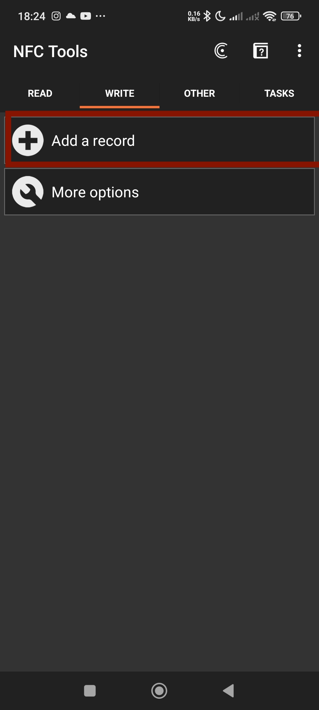

- 0負擔0壓力
- 不會占用課餘時間
- 課程內容不會僅限於程式，內容豐富，不困難
- 不管有沒有程式基礎都能加入！
大直資訊社 第27屆
社團介紹
跟這個AI聊天吧!你想加入資訊社嗎？
«會不斷問要不要加入資訊社的AI聊天機器人»
AI介紹
點擊展開\收起
製作方法:
- 打開Dify
- 建立空白應用
- 選擇聊天流，並給你的AI取名
- 選擇想要使用的AI模型

- 接著在提示詞欄位中，用[白話文]寫出你想讓他做的事
- 最後按下預覽就完成啦!
課程介紹
你可以在這裡學到
- AI 應用入門：用現成工具與簡單程式，完成「屬於你的 AI 助理」或「自動化小工具」（例如：摘要整理、關鍵字查找、簡單對話機器人）。
- C++ 段考必備：輸入輸出、變數與型別、if/for/while、陣列、字串、函式、常見題型解題技巧與考前複習策略。
- HTML建立基礎網頁 體驗建設一個自己的網頁
- 介紹和體驗不同的AI! 從生成影片到自動生成字幕等，體驗不同的AI
- 如何做出一個屬於自己的NFC片!
特色
| 0 基礎可入門 | 我們會邊示範邊帶著做 |
| 內容豐富 | 我們不會長時間停留在同一個主題上，盡量加大課程的豐富性 |
| 上什麼由你來決定! | 想先上那些你有興趣課程嗎?課程的順序由你們來決定! |
宣傳用NFC卡片的不同使用方式
這次你們拿到小卡片的用途可不只有讓網站出現，事實上這張卡片可以讓你自己定義它的功用!，不論是掃一下手機後瞬間打開某款程式、連接到你的哪個藍芽裝置、打開某個網站、瞬間把你的IG帳號資訊給對方...等，它有著很多不同的功能。來看看要怎麼設定它吧!教學點擊展開\收起
- 下載手機應用程式NFC Tools(連結無效的話可以在App store或Google Play上找到)
- 開啟NFC Tools後按下[write]
- 按下[Add a record]，接著它會線很多不同的功能，選擇想要的其中一項按下就可以了
- 
-
這邊翻譯幾個比較常用到的功能:
選項 功能 用法 URL/URI 掃一下就打開一個網址 1.在選項中選擇[http://](預設的那個)2.再輸入欄中輸入你想打開的網址3.按下ok Wi-Fi Network 掃一下讓人連接到某個網路(裡面包含了網路密碼等，掃一下就可以連接到) 所有選項都照著你目標網路的內容填;SSID:填網路的名稱 Bluetooth 掃一下讓你手機的藍瞬間連結到指定裝置 1.按下輸入欄旁邊的放大鏡圖標2.選擇你要指定的裝置(只有連結過的裝置會顯示) Appliction 掃一下手機會[直接]打開設定好的遊戲 1.按下輸入欄旁邊的安卓、箭頭按鈕2.選擇想要的應用程式3.按下ok - 確定好要執行的功能後這裡會顯示設定了甚麼，確認好後按下[write/?Bytes]
- 最後把卡片靠近你手機NFC感應的位置，成功的話會顯示一個畫面
- 這樣你的卡就覆寫完了!下次拿手機掃描這張卡片時他就不會再彈出我們社團的網站而是執行你所寫的行動!